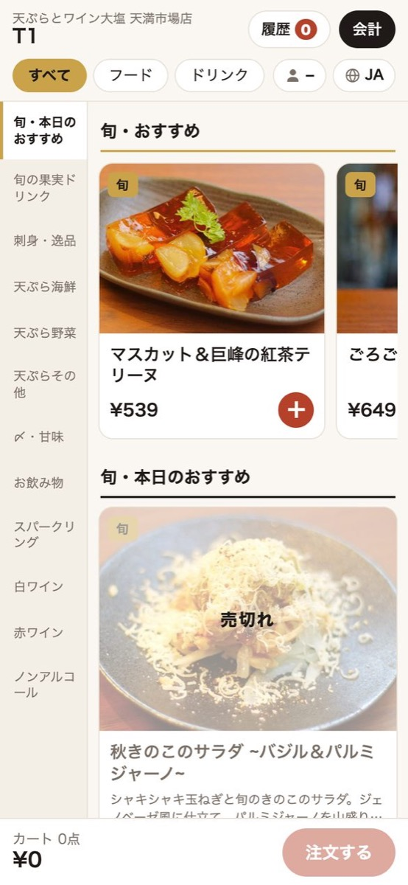
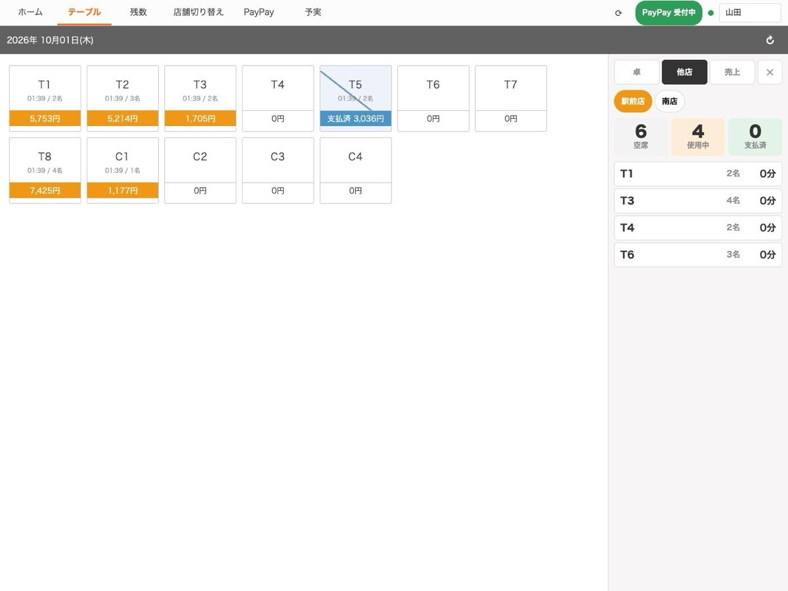
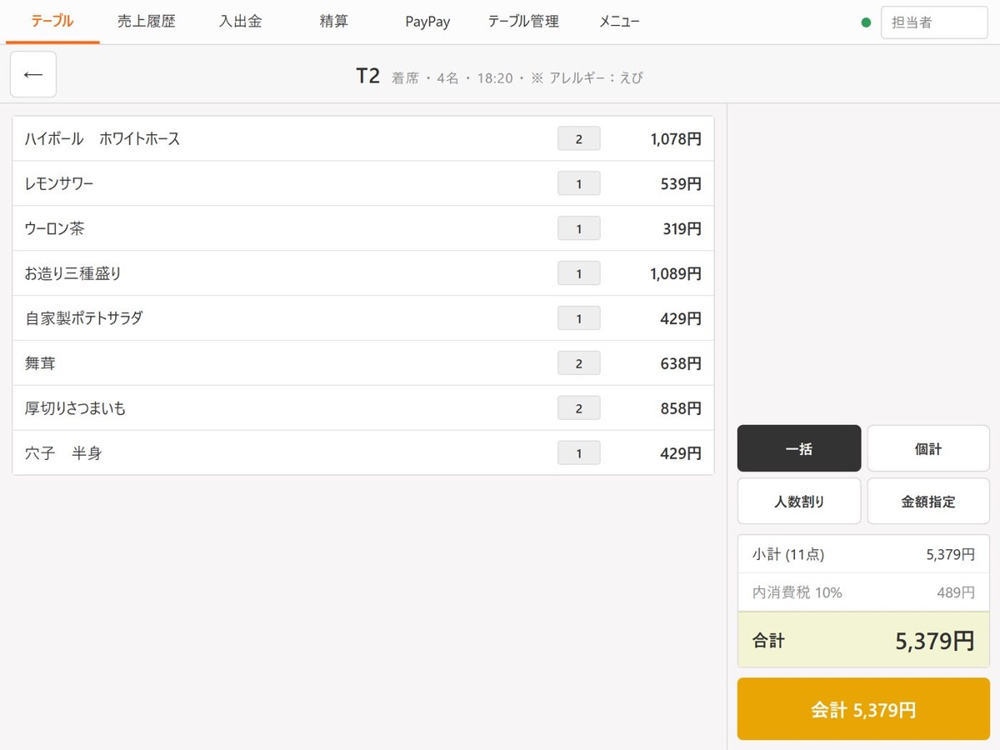
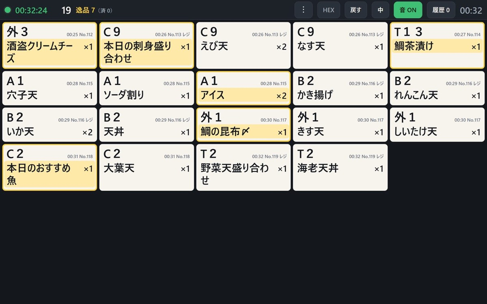
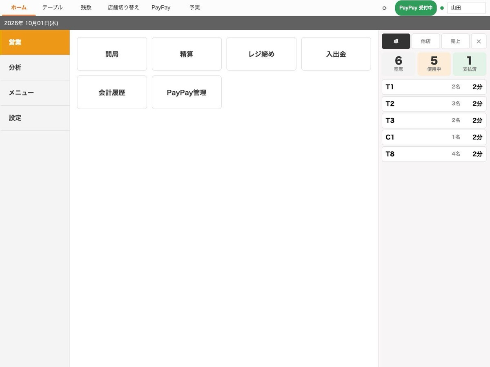

AI事業｜飲食店経営AI
注文、会計、打刻、給与、シフト、経理。
店のことはKANAIが回します。
人は、人にしかできないことを。

天ぷらとワイン大塩・たこ焼き酒場なにわなど、
アゲルの店舗を毎日回している仕組みが AI KANAI です。
デモ用ではなく、自社の店で実際に動いているものを
飲食店のみなさまにお届けします。
お客様と、スタッフの手元に。

お会計はテーブルの上で。伝票も暗算も紙代もなくなる。5ヶ国語に自動翻訳。

閉店後の入力ほぼゼロ。締めもPayPayの照合もレジで。厨房の表示もつながります。
いつものLINEに、聞けば答えて、頼めばやっておくKANAIが。
必要になったぶんだけ、足していく。



※ 画面はサンプルデータです